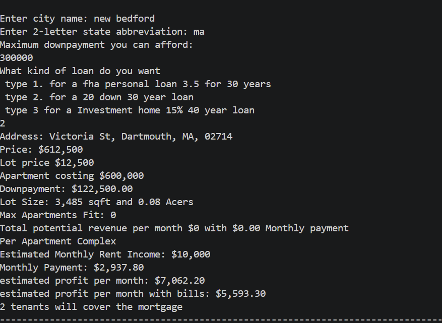
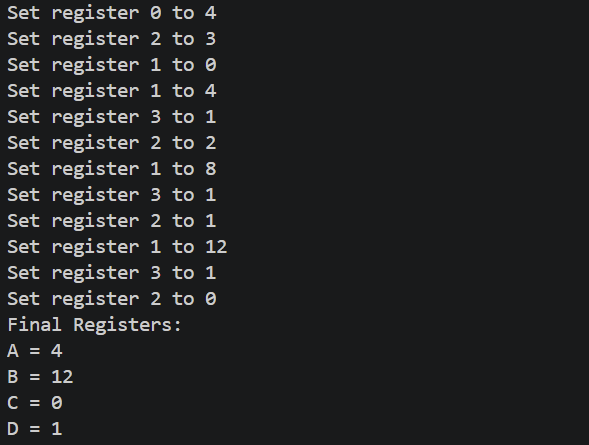

A Triplex finder
The point of this project was to calculate the amount of money it would cost to buy the Triplexs that are already int the area that you are looking for. I also set it up so that if you wanted to rent out 2 units or possibably all 3 you will see the amount of money the dwelling will cost. But also how much you could make if you were looking into it as a investment instead of a primary residence.

A emulator
In this project I created a basic emulator that changes registered A-D This emulator is able to do basic operations such as addition, subtraction and also jumping to a differnt spot of memery when the conditions are right. This project was mainly focusing on the idea behind emulation along with learning the new concepts of manipulation the memory within the machine.

creating a bot
This third project one was a home project that I had seen on youtube. I did some reasearch and learned how to make a bot this bot was designed in a way so that it can search anything up on youtube. This would be very benefital for applications that are very repitative. A good example is for data entry over the web where your able to run the process while focusing on something else. One way people use this is scalping concert tickets by having it automated.
File input/Output
This program will create a file in a certain location and the code will allow the user to input the information from the program onto the file. This program also allows for people to read the file that they were modifiing to verify there was no mistakes. With this project teaching us the lessons of inputting or outputting onto a file one way this program can be benefital is by saving information onto a file for a major project.